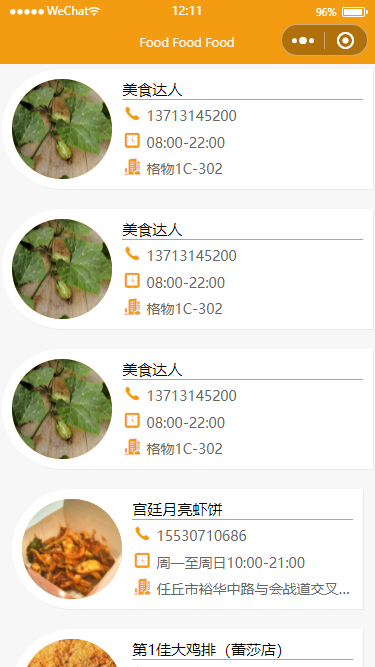

.事件
.导航
.声明周期函数
.进一步熟悉资源服务器的搭建和网络请求的过程
.掌握事件的基本使用以及
.掌握导航的基本使用
.掌握页面的生命周期函数的使用
.从资源服务器读取数据并渲染
.按照以下步骤完成美食列表的设计和开发
.本案例可拓展至列表形式的其它内容，如新闻、购物车、订单、留言、代办事项等；不局限于美食。如果使用其它题材，请自行准备素材或服务器
.独立完成
.有自己的设计和拓展
.实验报告：采用学院统一下发的 实验模板 文件，以文字说明，配以必要的效果图片或核心代码，展示并说明数据来源、实施过程、各部分功能、具体内容和实现细节；最后导出为PDF，按照要求命名，提交个人学习通作业
数据节点信息要素；准备若干条
为调试方便，没有给出完整的图片路径，仅给出图片部分路径，后期再拼接上资源服务器的地址
{
"id": 1,
"image": "/img/2846ed948e95eef4c4d50edaf52a483432023.jpg",
"name": "宫廷月亮虾饼",
"phone": "15530710686",
"address": "任丘市裕华中路与会战道交叉口东南角蕾莎汇生活4层",
"businessHours": "周一至周日10:00-21:00"
}
店铺、地址、联系电话、营业时间
node.js、express
颜色、标题可以自定
"window": {
"navigationBarTextStyle": "white",
"navigationBarTitleText": "foods",
"navigationBarBackgroundColor": "#f39c12"
}
"pages": [
"pages/index/index",
"pages/index/detail/detail"
]
盒模型
字体
图片
布局
导入@import
使用下拉刷新
"navigationBarTitleText": "Foods", "navigationBarBackgroundColor": "#ffa502", "enablePullDownRefresh": true
列表渲染
网络请求 - 使用一个flag区分下拉刷新和触底加载；page、pageSize、isLoading使用静态数据；baseUrl使用动态数据，因为结构中需要使用
loadLists(flag) {
this.isLoading = true
wx.request({
//url: this.data.baseUrl + '/good/page?page=' + this.page + '&pageSize=' + this.pageSize,
url: this.data.baseUrl + '/good/page',
//默认是GET；可以不写
method: 'GET',
//也可以不使用data配置项，直接拼接请求参数
data: {
page: this.page,
pageSize: this.pageSize
},
success: (res) => {
//拉取成功后，新数据叠加到旧数据上
this.setData({
lists: [...this.data.lists, ...res.data],
total: res.header['X-Total-Count']
})
},
fail:err=>{
console.log(err);
},
complete: () => {
this.isLoading = false
if (flag) {
wx.stopPullDownRefresh()
}
}
})
}
每个数据项绑定事件，单击后跳转到详情页；思考：为什么使用currentTarget？
toDetail(e) {
wx.navigateTo({
url: './detail/detail?id=' + e.currentTarget.dataset.id,
})
}
下拉刷新 - 页数初始化；初始化完成后，停止刷新动画；true表示要执行停止刷新行为
onPullDownRefresh() {
this.page = 1,
this.setData({
lists: []
})
this.loadLists(true)
}
触底加载 - 页数和页大小达到总数时，停止加载；数据加载中停止再次触发加载
onReachBottom() {
//也可以直接判断当前列表的长度和总长度是否相等
if (this.page * this.pageSize >= this.data.total) {
return;
}
//这两个条件可以合并判断
if (this.isLoading) {
return;
}
this.page ++
this.loadLists(false)
}
数据项渲染 - flex布局；溢出打点；注意直接父级也要溢出隐藏

onLoad(options) {
this.setData({
id: options.id
})
//自行完成
}
let fs = require('fs');
let express = require('express')
let port = 3000
// 创建Web服务器对象
let app = express();
// 静态资源处理
app.use(express.static('./public'));
// 读取JSON数据
const jsonStr = fs.readFileSync('./public/data/good.json', {
encoding: 'utf8'
});
const food = JSON.parse(jsonStr);
//全部拉取
app.get('good/all', (req, res) => {
res.send(food.cont)
})
//分页拉取 - 请求格式 ?page=1&pageSize=10
app.get('good/page', (req, res) => {
let arr = [...food.cont]
let start = (req.query.page - 1) * req.query.pageSize;
let result = arr.splice(start, req.query.pageSize)
res.setHeader('X-Total-Count', food.cont.length);
res.send(result);
});
app.listen(port, () => {
console.log('服务器启动成功，地址为：http://127.0.0.1:3000');
});